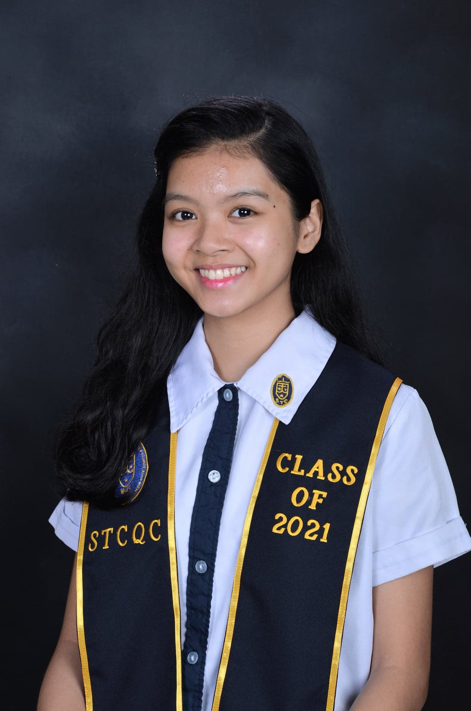

Jose Gabrielle Viray
Architecture Student

Education
Primary Education
De La Salle Araneta University | June 2007 - Mar 2015
Class Salutatorian ; consistent honor student
Mr. and Ms. BED 2012 Ambassadress
Best in Art, Computer, TLE, and Christian Living
Leadership Award (SCB Senator)
Secondary Education
St. Theresa's College Quezon City | June 2015 - May 2021
Consistent Outstanding Student
KASAMAHAN and KABALIKATAN leader
Science Forum 2020 panelist
Mathletes & Nucleus member
Tertiary Education
University of the Philippines Diliman | Sept 2021 - May 2027
Course: BS Architecture
Skills
Manual and Sketchup Rendering
Communication skills
Basic programming
Time management
Contact Information
Email: jdviray1@up.edu.ph
Contact No.: 09690388617
My Facebook Profile